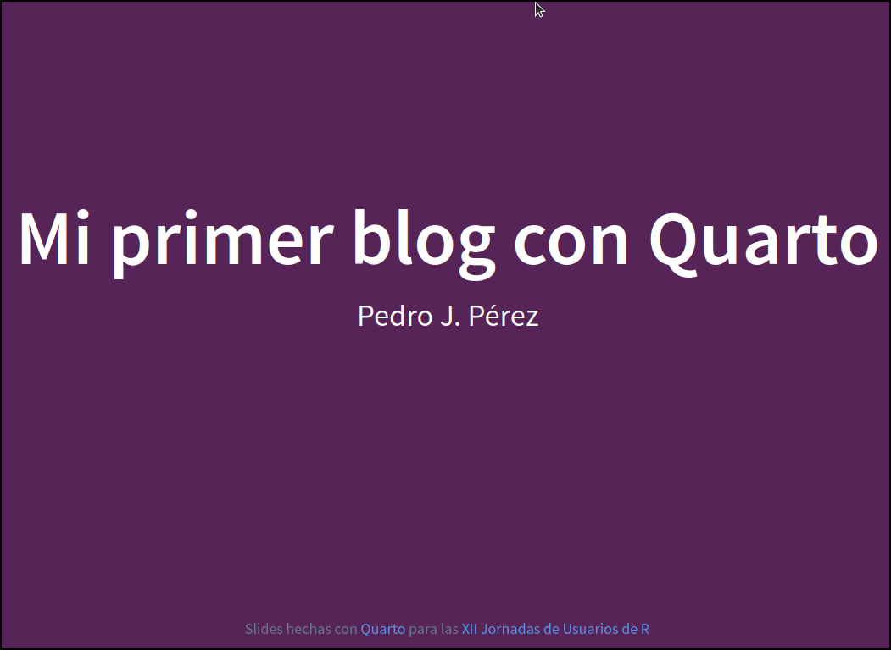

Escribiendo posts: un ejemplo de post
(9ª parte del taller Mi primer blog con Quarto)
En este tutorial sirve de plantilla para ir escribiendo un post que contenga distintos elementos disponibles en Quarto para escribir con archivos .qmd.
Figuras
Documentación aquí.
Las imágenes (o figuras) se pueden insertar de múltiples maneras:
- La sintaxis de Pandoc:

{#fig-01 fig-align="left"}Subfiguras
Documentación aquí.
::: {#fig-elephants layout-ncol=2}
{#fig-2.1}
{#fig-2.2}
2 imágenes alineadas
:::Panel de imágenes
Documentación aquí.
::: {layout-nrow=2}


:::Custom layouts
Documentación aquí.
::: {layout="[[40,-20,40], [100]]"}


:::- tamaño por defecto: https://quarto.org/docs/computations/execution-options.html#figure-options
Callouts
Documentación aquí
::: {.callout-important icon="false"}
#### Tarea xx
- Tendremos que hacer esto
- y esto otro
:::Tablas
https://quarto.org/docs/authoring/tables.html
Editor visual
https://www.rstudio.com/blog/exploring-rstudio-visual-markdown-editor/
Bibliografía
Para aprender puedes ir a este Quarto tip, a este video. La documentación oficial está aquí y aquí para usar el editor visual.